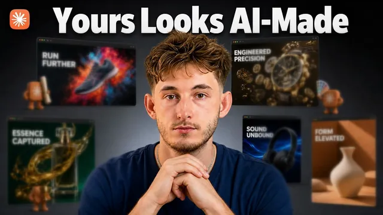

눈 돌아가는 웹사이트를 만드는 갓스킬 5개 (클로드 디자인)

원본 영상 보기 →
- 평균에서 벗어나는 게 핵심이다
- 빌더와 심판을 분리하는 게 품질을 가른다
- 리드마그넷 전략이 진입장벽을 없앤다
한 줄 요약
클로드 디자인(Claude Design)에 다섯 가지 스킬 — Front-end Design, UI UX Pro Max, GSAP, Impeccable, 그리고 유행 중인 "건틀렛 루프(Gauntlet Loop)"를 응용한 디자인 건틀렛 루프 — 을 차례로 쌓아서 낡은 로펌 웹사이트를 통째로 재구축하고, 이 방식을 로컬 비즈니스 리드마그넷 영업으로 연결하는 방법을 보여주는 영상이다.
전체 내용 정리
새로 뜨는 "건틀렛 루프" 프롬프팅 기법이 왜 웹사이트 제작으로 넘어왔나
Matt Schumer라는 사람이 "건틀렛 루프(Gauntlet Loop)"라는 프롬프팅 기법으로 클로드에게 게임 엔진도 다운로드한 에셋도 없이 게임 하나를 통째로 원샷으로 만들게 해서 SNS 조회수 400만을 넘겼다. 이후 사람들이 이 기법으로 3D 포켓몬, 카트 레이서 등을 만들어봤지만, 진짜 돈이 되는 건 게임 데모가 아니라 웹사이트라는 게 이 영상 진행자(Nick)의 요지다. 그래서 그는 건틀렛 루프를 클로드 스킬로 변환했는데, 이 스킬 안에는 서로 다른 4개의 "크리틱(비평가)"이 들어있고 그중 하나는 다른 디자인 툴이 체크하지 않는 것 — 그 페이지가 실제로 판매(전환)에 효과적인지를 심사한다. 이 영상에서는 이 건틀렛 루프 스킬을 지금 설치 가능한 가장 강력한 디자인 스킬 4개와 함께 쌓아서 실제 비즈니스에 적용한다. 사용 도구는 클로드 디자인(Claude Design)이라는 워크스페이스로, 같은 클로드가 웹사이트·그래픽·프레젠테이션 같은 시각적 결과물에 특화되어 있고 스킬을 설치하면 디자인 방식이 바뀌는 구조다. 실습 대상은 20년 이상 활동했지만 저작권 표기가 2019년에 멈춰 있어 약 7년간 손대지 않은 것으로 보이는 1인 변호사 사무실 웹사이트다.
스킬 1 — Front-end Design: 클로드가 "평균적인 디자인"으로 수렴하는 문제를 고친다
첫 번째로 설치한 스킬은 Anthropic이 직접 공개한 "Front-end Design" 스킬로, 설치는 링크를 붙여넣고 클로드에게 설치를 지시하는 것으로 끝난다. 이 스킬이 필요한 이유는 클로드의 기본 문제 때문인데, 수백만 개의 웹사이트를 학습했기 때문에 결국 "평균"으로 수렴해 보라색 그라데이션의 카드 그리드처럼 AI가 만든 페이지에서 흔히 보이는 특징 없는 디자인을 재현한다는 것이다. Front-end Design 스킬은 Anthropic이 자사 모델의 이 문제를 스스로 고치기 위해 만든 것으로, 클로드가 하나의 구체적인 디자인 방향을 정하고 밀고 나가도록 강제하며, 지침 파일 안에 특정 뻔한 패턴들을 이름으로 콕 집어 금지해놓았다. 실습에서는 로펌 사이트의 실제 콘텐츠(형사·가사법 등 업무분야, 변호사 이력, 연락처, 고객 후기)를 그대로 유지하고 아무것도 지어내지 말라고 지시한 뒤, 히어로·업무분야·판례·후기·상담예약 섹션을 갖춘 원페이지 사이트로 재구축하도록 요청했다. 몇 분 뒤 나온 결과물은 눈에 띄게 개선돼 있었고 모든 정보는 실제 원본 사이트에서 가져온 것이었으며, 하단에는 문의 제출 폼도 포함돼 있었고 상단 메뉴를 클릭하면 해당 섹션으로 스크롤 이동하는 기능도 정상 작동했다.
스킬 2 — UI UX Pro Max: 업종에 맞는 디자인 시스템을 자동으로 골라준다
두 번째 스킬 "UI UX Pro Max"는 Front-end Design 스킬이 방향은 잡아주지만 업종을 모른다는 한계를 보완한다. 이 스킬은 사실상 스킬 형태로 압축된 디자인 데이터베이스로, 67가지 UI 스타일과 수십 개의 색상 팔레트·폰트 조합, 그리고 어떤 조합이 어떤 업종에 맞는지에 대한 규칙이 들어있다. 코드를 한 줄도 쓰기 전에 이 데이터베이스를 검색해서 지금 만들려는 것에 실제로 맞는 시스템을 먼저 고르는 방식이며, 원래 이런 결정은 디자인 에이전시가 비용을 받고 해주는 작업인데 이제는 이 스킬만으로 자동 처리된다. 실습에서는 완전히 다른 업종으로 바꿔 "UI UX Pro Max 스킬을 써서 핀테크 뱅킹 랜딩페이지를 만들어줘"라는 약 10단어짜리 프롬프트와 로펌 사이트 링크만 제공했다. 몇 분 뒤 나온 결과물은 "영업일이 아니라 몇 초 만에 정산되는 비즈니스 뱅킹"이라는 헤드라인의 SaaS 스타일 사이트로, 섹션 탐색, 고객 후기, 제품 소개, 신뢰 리포트, 월간/연간 전환이 되는 요금제 페이지까지 모두 갖추고 있었으며, 특정 요소를 클릭해 코멘트를 달거나 직접 프롬프트로 수정하는 것도 가능했다.
스킬 3 — GSAP: 전문 스튜디오 수준의 모션을 입힌다
세 번째 스킬은 GSAP 팀이 직접 만든 "GSAP" 스킬로 모션(움직임)을 담당한다. 대부분의 AI가 만든 사이트는 스크롤하면 페이드인되는 정도의 딱 한 가지 움직임만 갖고 있는 반면, GSAP는 전문 에이전시들이 실제로 쓰는 애니메이션 라이브러리라서 클로드가 모션을 추측하는 대신 그 라이브러리 개발자들이 실제로 짜는 방식대로 코드를 작성하고 끊김 없는 부드러움까지 신경 쓴다. 실습에서는 포르쉐 911 이미지를 프로젝트에 넣고, 이 사진을 히어로 제품 샷으로 써서 스크롤에 따라 이야기가 펼쳐지는 원페이지 사이트를 만들어달라고 요청했다. 구체적으로는 Arcads MCP와 캔버스로 그 이미지를 6초 정도의 시네마틱 영상(차체 위로 빛이 흐르며 천천히 줌인하는, 반복 재생 가능한 클립)으로 먼저 만들고, 그다음 GSAP 스킬로 그 영상을 중심에 두고 페이지를 구성하도록 지시했다. 결과물 중 엔진·출력·토크 수치를 보여주는 부분과 속도감을 표현하는 스크롤 연출은 마음에 든다고 평가했지만, 일부 구간은 상자처럼 딱딱해 보이고 이미지 화질이 낮아 "사진 화질이 낮으니 포르쉐 이미지를 새로 만들어달라, 다만 영상 클립은 손대지 말아달라"고 추가 요청했고, 이후 이미지 품질은 개선됐지만 완전히 매끄럽지는 않았다고 전했다.
스킬 4·5 — Impeccable로 AI 티를 지우고, 디자인 건틀렛 루프로 최종 심사한다
네 번째 스킬 "Impeccable"은 앞선 세 스킬로 좋은 취향을 심어도 여전히 살아남는 AI 특유의 습관을 잡아내는 탐지기로, 페이지를 AI가 만든 티가 나게 하는 64가지 구체적인 패턴을 하나하나 찾아낸다. 오픈소스로 공개돼 있고 깃허브 스타가 약 6만 개에 달하며, 핵심 질문은 "낯선 사람이 이 페이지를 보고 기계가 만들었다는 걸 알아챌 것인가"다. 실습에서는 detect 명령으로 발견된 모든 AI 티 패턴과 위치를 나열하게 한 뒤 가장 심각한 두 가지만 고치고 전후 비교를 보여달라고 요청했는데, 첫 번째 수정은 남용된 서체(Instrument Serif)를 바꾼 것이었고 두 번째는 크림베이지 색상 팔레트를 좀 더 시원한 톤으로 바꾼 미세한 수정이었다. 다섯 번째이자 마지막 스킬은 "디자인 건틀렛 루프"로, Matt Schumer의 3줄짜리 프롬프트 방법론 — 과제 설정, 서브에이전트로 나눠 만들고 각 빌더에게 별도의 비주얼 크리틱을 붙이는 빌드 방식, 모든 크리틱이 실제 결과물과 나란히 비교해도 만족할 때까지 멈추지 않는다는 기준 — 을 웹사이트 제작용으로 재구성한 것이다. 핵심은 "만드는 에이전트가 자신의 작업이 끝났다고 스스로 판단하지 않는다"는 것이며, Anthropic의 2024년 연구에서 별도의 모델이 평가를 맡을 때 결과물 품질이 좋아진다는 사실이 확인됐다고 언급됐다. 로펌 사이트에 이 루프를 돌리기 전에는 벤치마크할 참고 사이트, 전환 크리틱이 대변할 고객 페르소나, 가장 중요한 행동(전화 vs 상담폼 제출), 라운드 수(비용과 직결), 절대 바꾸면 안 되는 요소(골드 액센트 컬러), 적절한 모션 정도(거의 정적으로) 같은 입력값을 먼저 답해야 했다. 2라운드를 거친 결과 브리프 점수는 88점으로 통과했지만 카피(크래프트) 점수는 1라운드 68점, 2라운드 79점으로 여전히 미달이었고, 히어로 섹션에 증거 없는 경력 주장, 4번 스크롤해야 나오는 5성 후기, 전화번호가 버튼이 아니라 그냥 텍스트로 보이는 문제 등이 구체적으로 지적됐다.
실전 수익화 플레이북: 이 방식으로 어떻게 돈을 버는가
영상 후반부에서는 이 방식으로 실제로 돈을 버는 방법을 설명한다. 먼저 한 업종을 한 도시 단위로 좁게 고른다(로펌, 클리닉, 부동산 관리업체 등). 구글 맵에서 리뷰가 20~100개 사이인 업체를 찾는데, 이 정도 리뷰 수는 실제 고객이 있는 진짜 사업체라는 신호이기 때문이다. 그다음 그 업체의 웹사이트를 앞서 보여준 방식으로 통째로 재구축하되, 상대가 요청하기도 전에 먼저 만들어 놓는다. 예전에는 이 작업 자체가 비쌌지만 이제는 클로드 구독료 기준으로 약 20달러, 시간으로는 약 20분이면 되는 사실상 무료에 가까운 리드마그넷이 됐고, 업체 사장에게는 영업 멘트 없이 링크 하나만 보내면 결과물 자체가 설득을 대신한다. 수익 구조는 웹사이트 교체(스왑) 작업에 대해 비용을 청구하고 이후 유지·관리를 위한 월 리테이너를 받는 방식이며, 예시로 월 300달러짜리 고객 10곳이면 월 3,000달러가 된다고 제시됐다. 이렇게 만든 사이트 하나하나가 다음 영업의 증거가 되고, 이를 발판 삼아 AI 전환 파트너로서 시스템 감사·병목 발견·프로세스 자동화 같은 컨설팅으로 확장할 수 있으며, 업체 찾기와 웹사이트 점검, 콜드 이메일 작성까지도 클로드로 처리해 대량으로 반복할 수 있다고 언급됐다.
핵심 인사이트
- 평균에서 벗어나는 게 핵심이다: 클로드는 기본적으로 수백만 사이트의 "평균"으로 수렴하기 때문에, 스킬 없이 그냥 프롬프트만 잘 써서는 보라색 그라데이션 카드 그리드 같은 뻔한 결과를 벗어나기 어렵다 — 방향을 강제하는 스킬(Front-end Design)이 있어야 한다.
- 빌더와 심판을 분리하는 게 품질을 가른다: 건틀렛 루프의 핵심은 만든 에이전트가 자기 작업을 스스로 합격 판정하지 않는다는 것이다. Anthropic 연구도 별도 모델이 평가할 때 결과가 더 좋아진다는 점을 뒷받침하며, 웹사이트뿐 아니라 어떤 AI 산출물이든 별도 평가 단계를 두는 게 품질 상한을 올린다는 시사점을 준다.
- 리드마그넷 전략이 진입장벽을 없앤다: "만들어드릴까요?"라고 묻는 대신 이미 완성된 재구축 결과물을 링크 하나로 보내는 방식은, 영업 없이도 결과물 자체가 설득하게 만들어 콜드 아웃리치의 낮은 전환율 문제를 우회한다.
오늘 당장 해볼 것
- 본인 사업 웹사이트나 블로그·SNS 프로필을 직접 켜서, 마지막으로 업데이트한 시점을 확인하고 전화번호나 상담 신청 같은 핵심 행동이 첫 화면에서 바로 보이는지, 후기·경력 같은 신뢰 요소가 스크롤을 여러 번 해야 나오지는 않는지 체크해본다.
- 거래 중인 웹 에이전시나 프리랜서 디자이너에게 "우리 사이트가 AI가 만든 것처럼 뻔해 보이지 않는지, 전화나 상담 신청 같은 핵심 행동이 첫 화면에서 바로 보이는지" 점검해달라고 요청해본다.
- 웹사이트가 몇 년째 방치된(예: 저작권 연도가 옛날에 멈춘) 지인이나 거래처 업체가 있다면, "요즘은 웹사이트 리뉴얼을 거의 무료로 먼저 시범 제작해보고 마음에 들 때만 계약하는 방식도 있다더라"고 알려주고 관심이 있는지 물어본다.